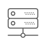

How can I connect?
Anyone with ASN number can connect.
Give our MOU a read first
, then connect to us with either 10, 25, 100 GE ports.
Contact Us
Where do I connect?
The IXP is currently in the TEC landing station with plans to expand.
Here's a map
of our physical location.

Colocation facilities
Check out the colocation facilities in
Peering DB
Pricing.
As of now, connections to
ix.kw
are free of charge.